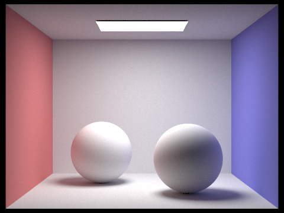
In this project, we develop a path tracing program to simulate photorealistic illumination in 3D scenes, enabling us to render artificial images that approximately capture the same physical light that we observe in our visual reality. Further, we expedite the notoriously expensive path-tracing pipeline with hierarchical data structures and clever sampling techniques.
Our path tracer assumes a ray model in which light travels through space along a straight line, subject to reflection off various physical surfaces, eventually landing on the eye of an observer. Hence, to render a scene from a certain perspective, we cast rays in the reverse direction (from the observer to the scene) and trace their paths to reason about the origin of the detected light and the intermediate surfaces it visited prior to reaching the observer.
Granted that we accurately model the interaction between the rays and the surfaces we attempt to portray, this path-tracing procedure constructs a physically faithful estimation of a given visual experience that is (hopefully) indistinguishable from a photograph of its tangible counterpart.
To generate a single ray from the camera's perspective at some location, we transform its image coordinates to a ray in camera space that points from the camera origin to a point within an axis-aligned virtual camera sensor. We then apply a rotation matrix to transform this ray into one that exists in world space.
For our path tracing to produce convincing output without excessive noise artifacts, we must generate several rays within each pixel. Thus, we sample random locations inside every pixel and cast a new ray for each sample into the scene. As we trace these paths through the scene, we estimate how much radiance they contribute to the output pixel, and update the sample buffer accordingly.
Tracing the path of a ray, however, depends on our ability to model scene intersection. For the scope of this project, we consider intersections with triangles and spheres, updating intersection times, surface normals, and bidirectional scattering distribution functions (BSDFs) as we detect collisions.
For ray-triangle intersection, we opted to implement the Möller-Trumbore algorithm, which involves computing a series of geometrically derived cross-products and dot-products that allow us to find the ray intersection time $t$ as well as express the ray in terms of barycentric coordinates $b_1$, $b_2$, and $b_0 = 1 - b_1 - b_2$ with respect to the vertices of the triangle. If all 3 barycentric coordinates are nonzero and $t$ lies within the range of observable values along the ray, then we indicate that an intersection has occurred. The Möller-Trumbore equations for finding the intersection time and barycentric coordinates are given below.
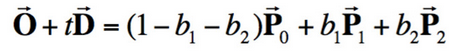
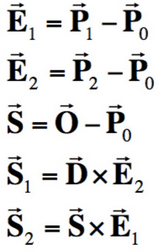
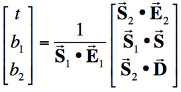
At this point, we are able to render simple images with smooth shading based on the surface normals we compute for intersected triangles and spheres.
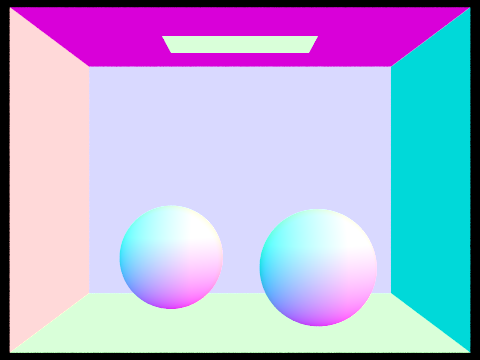
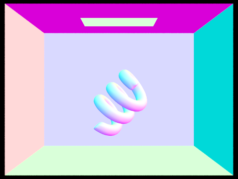
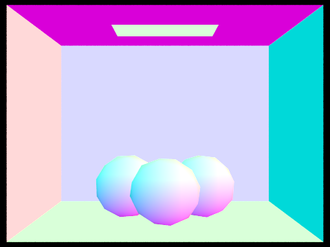
As the number of primitive shapes—triangles and spheres, in our case—increases in more complex scenes, checking for intersection with each of these primitives for every generated ray becomes prohibitively expensive. The Bounding Volume Hierarchy (BVH) data structure allows us to check ray intersection in logarithmic time, rather than linear time, with respect to the total number of primitives in the scene. It leverages a binary tree of nodes defined by the 3D bounding box of the primitives they enclose. Within this framework, reaching a leaf node guarantees that only a small number of primitives remain, at which point checking all intersections becomes a constant-time operation.
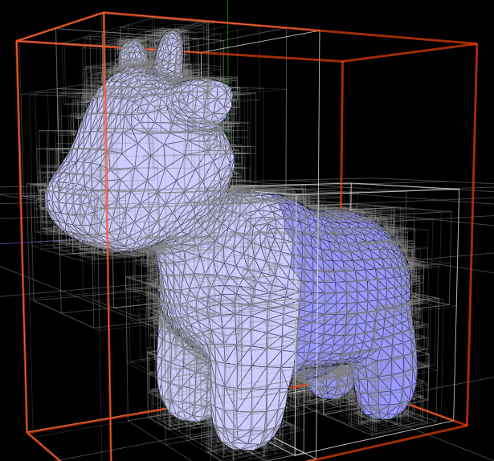
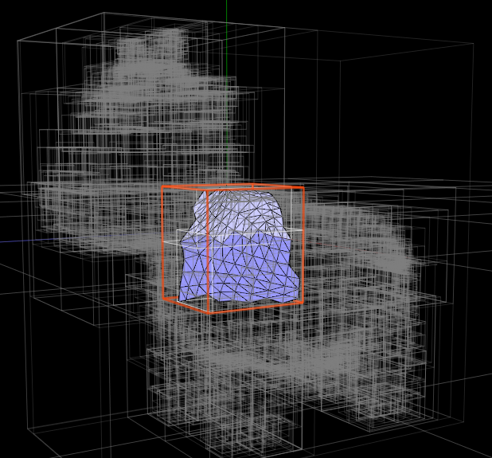
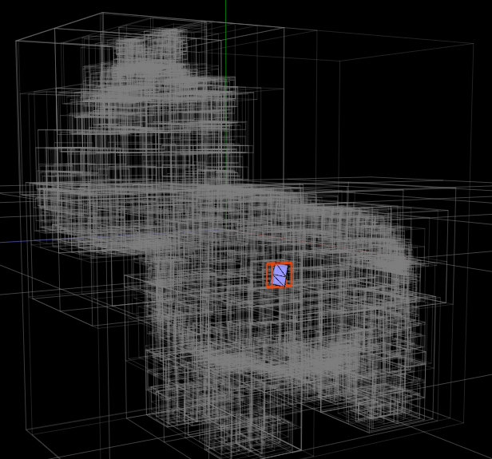
We opted to split internal nodes with the following heuristic. First, compute the average centroid of all primitives that the node encompasses, then partition these primitives into two sets based on their position relative to the average centroid along the most expansive axis of the bounding box. From here, we simply recurse on each of the two resulting subsets until encountering few enough primitives to create a leaf node.
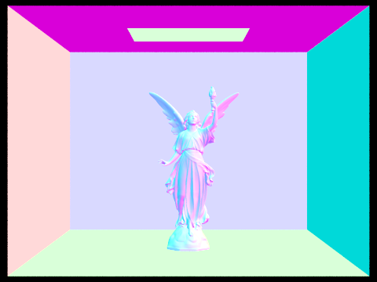
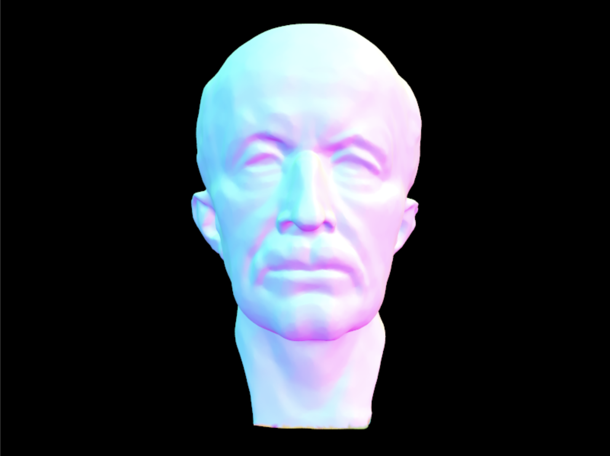
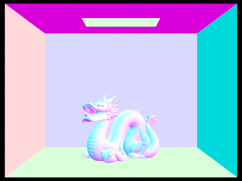
The efficiency of this data structure lies in the fact that we can quickly check whether a ray intersects the bounding box of a subtree, and then neglect to explore any further intersections therein if the ray misses this bounding box entirely. This splitting strategy produced significantly fewer intersection tests per ray than the naive approach we started with, by multiple orders of magnitude. Consequently, we are able to render images with more complex geometries like the ones above at a much faster rate. Below, we display the disparity in rendering times and intersection tests for some moderately complex scenes with and without a carefully constructed BVH backbone.
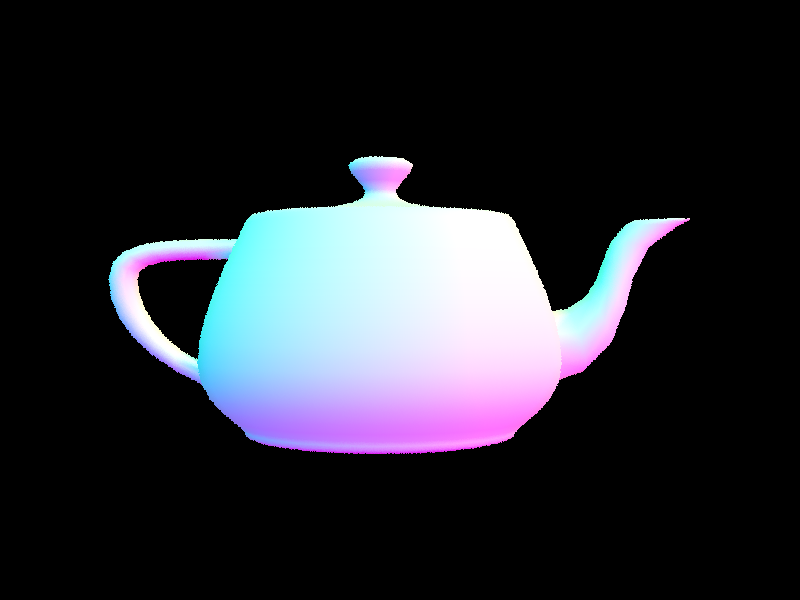
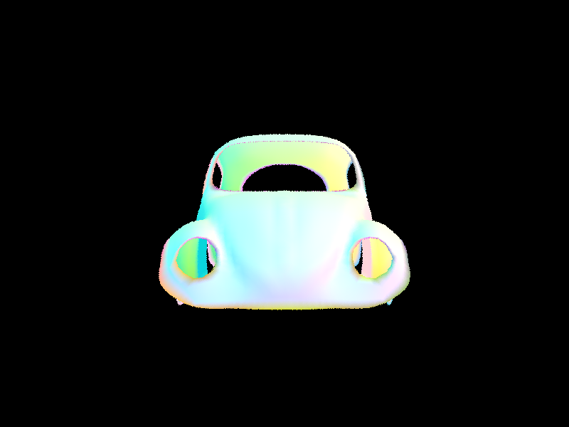
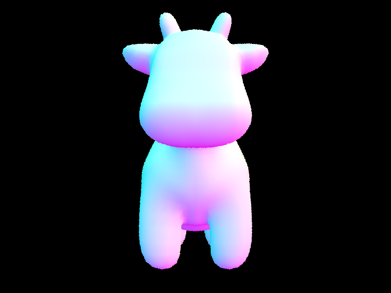
With a faster system to compute ray intersections, we are equipped to start modeling more realistic shading in our scenes. Direct illumination is the combination of light emitted directly from light sources and the light that travels from a light source to an object in the scene, then bounces to the observer. Visually, direct illumination manifests as light falling directly onto the scene from all sources, as the name suggests.
As we follow a ray backward through the scene and detect intersections with objects, we have to make a guess about which direction the ray came from and calculate the radiance coming from its origin in order to estimate how much light is reflected back to the camera. In this project, we approach this guessing game using two different sampling techniques. First, we create an imaginary unit hemisphere lying above the intersected point on our surface and create a direction vector, along which our ray will continue, by selecting a point on the hemisphere uniformly at random. We refer to this process as uniform hemisphere sampling. The other more clever method that we implemented is called importance sampling, which instead probabilistically weights the chosen direction vector to favor the locations of the light sources in the scene. Below, we compare the results of uniform hemisphere sampling and importance sampling using 16 samples per pixel and 8 samples per light source.
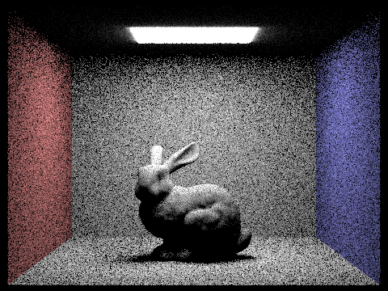
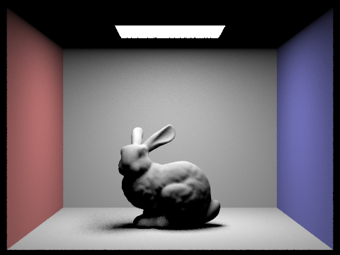
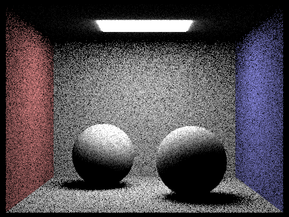
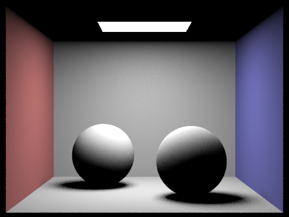
We observe that uniform hemisphere sampling produces a very noisy output compared with importance sampling, given the relatively low number of samples with which we rendered the images. The reason for this disparity in quality is that uniform hemisphere sampling produces a lot of useless rays that bounce off arbitrarily into the void and do not contribute to the output. Importance sampling, on the other hand, ensures that most of the ray bounces we produce are directed toward a light source, which gives us meaningful output and allows us to converge to a reasonable image with far fewer samples. In the following images of the CB Bunny, we see how the noise levels in soft shadows improve quite rapidly as the number of samples per light source increases while using a lighting-sampled probability density function.
Direct illumination on its own does not paint the full picture; we also need to account for light that bounces between objects and then onto the camera. Global illumination is an accumulation of direct and indirect illumination, representing a multitude of light rays bouncing across the scene, colliding with objects a variable number of times. Computationally, we view global illumination as tracing each casted ray between collisions until it either exits the scene indefinitely or terminates itself along the way, which therefore lends itself well to a recursive implementation.
If the maximum ray depth is 1 or less, we simply simulate direct lighting according to our ideas in the previous section. Otherwise, indirect lighting has been activated and we need to determine whether the ray should continue to be traced throughout the scene. We employ a "Russian Roulette" scheme that randomly stops each ray from resuming its traversal with a 30% probability every time it hits a surface, in which case it to ascends the recursive stack and gathers the lighting it has accrued for the output pixel from which it started its journey.
Remarkably, this Russian Roulette estimator for the infinite light bounces that would actually occur is unbiased. Intuitively, as the rays bounce more and more, their weighted radiance decreases from repeated reflection, so we enforce a maximum ray bounce depth to prevent visually negligible, yet expensive computation as well as the possibility of infinite recursion. The sample images below show a preview of the effect of global illumination.
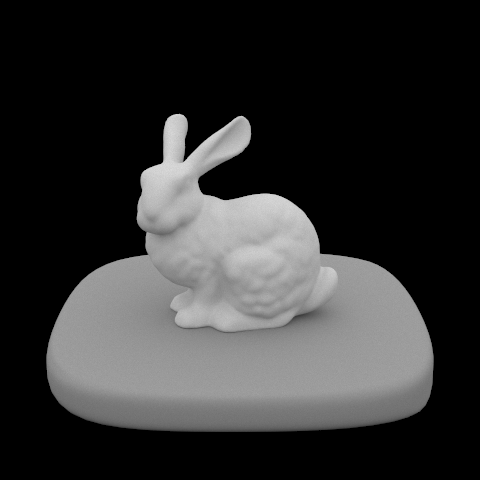
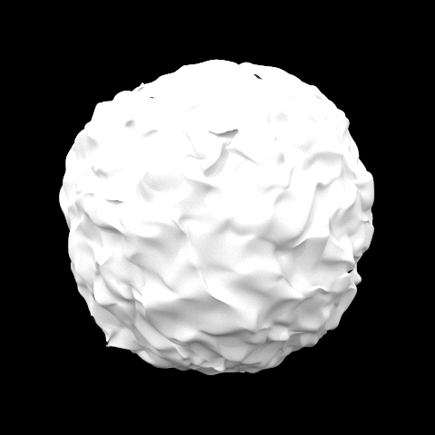
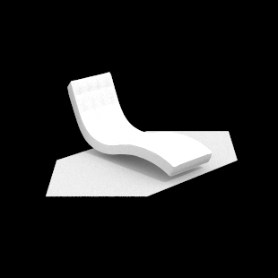
Because the global illumination process is purely additive in terms of radiance, we can separate the direct and indirect illumination of a rendered image. Direct illumination highlights the light source and the components of scene objects directly facing the light source with harsh lighting and shadows. Indirect illumination, however, casts light about the scene more evenly, as rays are given more free rein to bounce around and land on a wider variety of locations, including those that direct lighting rays cannot reach. This produces more convincing diffuse lighting and causes colors to be reflected between objects, most noticeably between the colored walls and the white spheres in the example below.
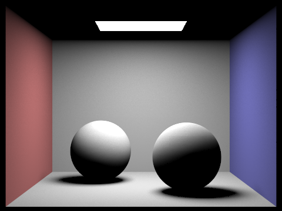
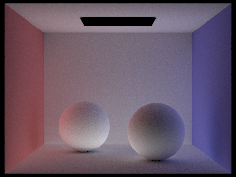
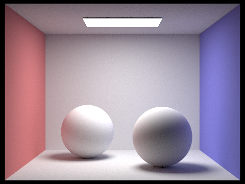
In the next progression of images, we observe how increasing the maximum ray depth affects global illumination. With zero-bounce radiance, we have only the light source visible. When the maximum ray depth is one, we obtain direct lighting as expected. After 2 bounces, we consider indirect lighting in addition to direct lighting for the first time, causing the ceiling of the box to be lit and the shadows to become much softer. With a maximum ray depth of 3, the resulting image is quite similar to the previous one, but with slightly lighter shadows that are most obvious in the top corners and edges of the room. Using a maximum depth of 100, the shadows in the top corners and edges recede a little bit more, and the colors reflected by the walls become more pronounced, especially in the shadows near them. The lack of a more substantial difference between maximum depths of 3 and 100 is likely caused by Russian Roulette killing off most rays much earlier than 100 bounces.
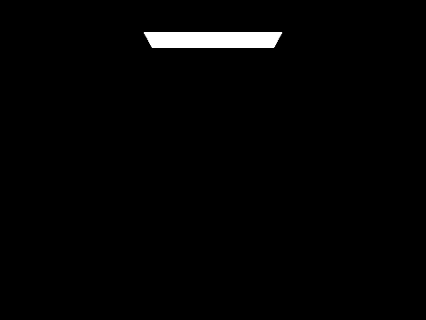
Now, we render the dragon image using varying samples per pixel with a fixed 4 samples per light. We see below that the images become smoother, more evenly lit, and overall less noisy as we increase the number of samples per pixel.
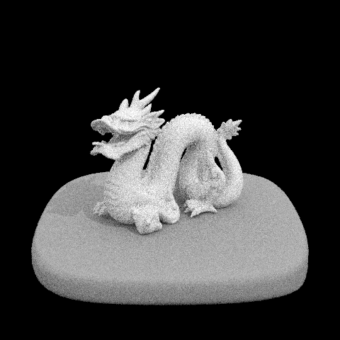
Until this point, we have been using a constant number of ray samples for every pixel while performing our path-tracing algorithm, perhaps wastefully so. Adaptive sampling addresses this dilemma by sampling randomly within each pixel until it converges to a particular value, up to some allowable tolerance, at which point we can safely terminate our sampling for the pixel in question. If a pixel's value takes too long to converge, the maximum number of samples specified is taken. This scheme helps improve rendering times by decreasing the total number of ray samples required.
To implement adaptive sampling, we maintain a running mean and variance of all of the sampled values so far for each pixel. After completing a batch of samples (of configurable size), we calculate the pixel's convergence value and compare it to the product of the running mean and the maximum tolerance. If the convergence is less than this acceptable bound, we stop sampling for that pixel. Otherwise, we continue until we reach either convergence or the maximum number of samples. Effectively, this procedure checks if new pixel samples vary significantly from the running mean and proceeds accordingly.
Below, we visualize sampling rate heatmaps for a couple of scenes, where red represents a high rate, green corresponds to a medium rate, and blue depicts a low rate. We note that direct lighting zones require few samples relative to indirect lighting zones.
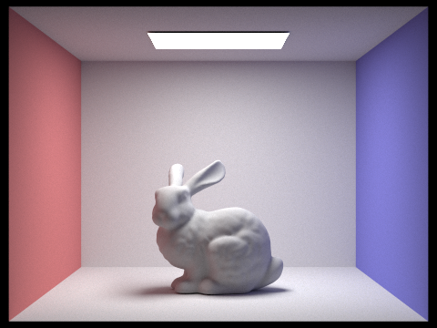
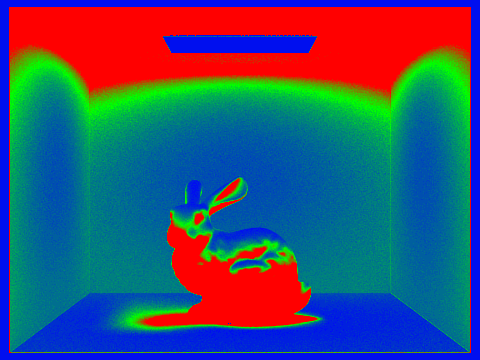
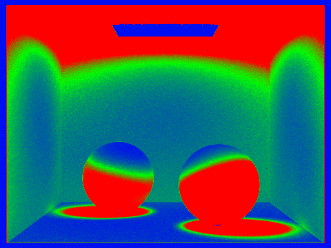
In this project, we extend our path tracer to handle reflection and refraction with respect to more complex surface materials. This will enable us to render a more interesting variety of visual scenes. Since we already have a functional path tracer that scatters light according to the physical characteristics of diffuse surfaces, all that remains is to categorize the new materials we wish to portray and specify how light should interact with them through their bidirectional scattering distribution functions (BSDF). Hence, to introduce some more aesthetic flavor to our path-traced scenes, we turn our attention to modeling mirror and glass materials as well as microfacet materials with varying roughness.
Mirrors are perfectly reflective, so when a 3D light ray comes into contact with such a surface, it undergoes a simple transformation in which the $x$ and $y$ components are inverted and no Lambertian falloff occurs. A completely refractive surface, on the other hand, allows light rays to pass through it, bending the light subject the object's index of refraction, consistent with Snell's Law. We also divide the transmittance by the square of the index of refraction, since radiance concentrates when a ray enters a material with a high index of refraction and disperses when it exits. In the event that total internal reflection occurs, we consider there to be no transmittance and return a zero vector.
We know that glass reflects a fraction of the light that hits it and refracts the remainder. The proportion of light rays that are reflected is represented by the Fresnel coefficient $R$, which we estimate using Schlick's approximation. Thus, we simulate the behavior of glass materials by probabilistically reflecting and refracting the traced light rays that come into contact with a glass surface according to the result of a random coin flip with $p=R$. Below, we show an image sequence containing a mirror ball in the background and a glass ball in the foreground. These images are rendered with a constant 1024 samples per pixel and 16 samples per light ray, but with increasing maximum ray depths.
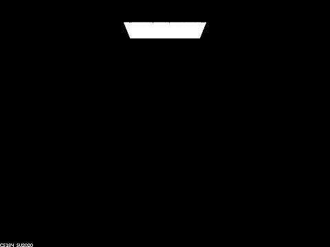
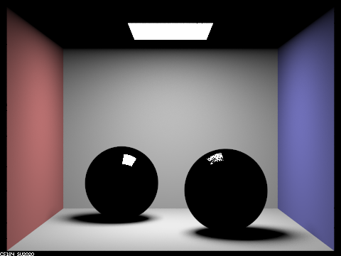
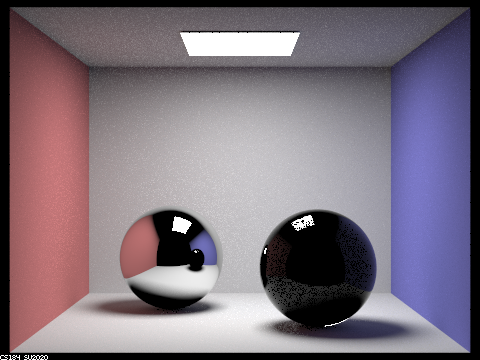
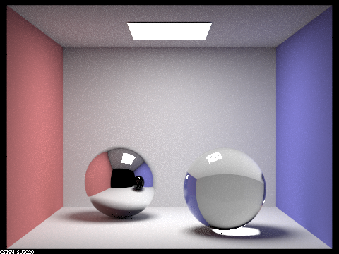
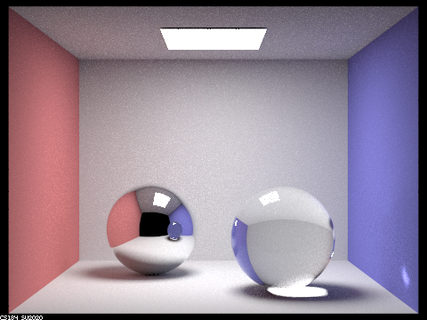
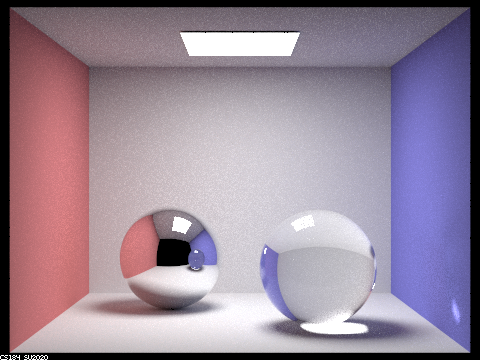
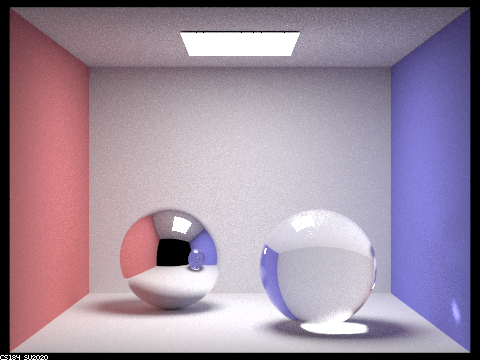
At a maximum depth of 0, we can only see the area light source, as expected. With 1 bounce, the walls and floor become diffusely illuminated and we can see directly reflected light at the top of both spheres—albeit, the mirror sphere reflects more light than the glass one. Light rays with depth 2 unveil reflections from the wall on the surface of the mirror ball, and to a lesser extent, the glass ball. A third bounce allows refraction through the glass ball to finally reach the eye, since light rays must bounce twice before even striking the back of the sphere. Moreover, 3 bounces causes the lit ceiling of the room to emerge in the reflection of the mirror ball, as this requires light to descend the height of the room twice and ascend it once before heading to the camera.
Adding another bounce to the scene allows considerably more light to get refracted through the glass sphere toward the camera. This manifests as an overall brighter glass ball with an especially glowing portion at the bottom, causing a concentrated beam of light to be sent to the bottom-right corner of the blue wall. The mirror ball also brightens up, specifically toward the bottom, and the reflection of the glass ball on the mirror ball is now colored blue due to refraction through the glass, off the wall, then back through the ball enabled by the fourth bounce. A 5-bounce ray depth produces a very similar image to that of 4 bounces, but slightly brighter from the boosted range of the casted rays. Finally, 100 ray bounces brightens the image further, especially on the ceiling, and brings out specular highlights on the top of the glass ball.
To implement the microfacet model for materials like plastic and metal, we begin by creating a microfacet BRDF evaluation function. We select the Beckmann probability density function to distribute the microfacet's normals, and query it exclusively at the half vector of the incident and exitant light rays, since the specularity of microfacets only allows normals along the half vector to reflect light. The normal distribution function component of the BRDF therefore depends exclusively on the angle between this half vector and the macro surface normal as well as the roughness of the surface. After sampling from the Beckmann distribution, we calculate the Fresnel term for the red, green, and blue channels (assuming each has its own wavelength) which describes the effective reflectivity of the material. This result relies on each material's inherent refractive indices and extinction coefficients at each RGB channel, which ultimately affects the coloration of the rendered surfaces. We also account for shadowing-masking, which indicates whether the microfacet is visible in the inbound or outbound direction.
Equipped with a microfacet BRDF now, we can query it via importance sampling. To do so, we sample the microfacet normal and reflect the light ray's outgoing direction with respect to the microfacet normal to establish the incident direction. Then, we derive the probability density function of the incident ray with respect to a solid angle. Since we are able to accurately sample this pdf and the incident light direction, we simply apply the BRDF evaluation function to obtain our reflected results.
The outcome of the microfacet model is parameterized by several configurable variables. One such parameter, $\alpha$, represents the roughness of the macro surface. As we increase $\alpha$, the object's surface becomes rougher, giving it a more diffuse appearance. In contrast, decreasing $\alpha$ yields a smoother surface that appears glossier and more polished. However, these polished surfaces also lead to high specularity and generate small white dots across the image. The result of varying $\alpha$ can be observed in the images that follow.
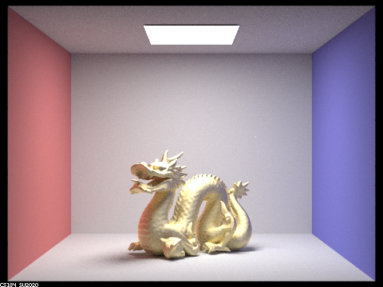
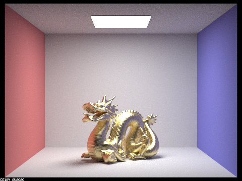
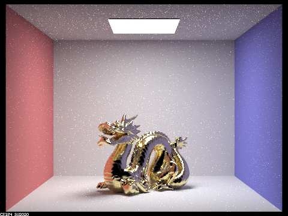
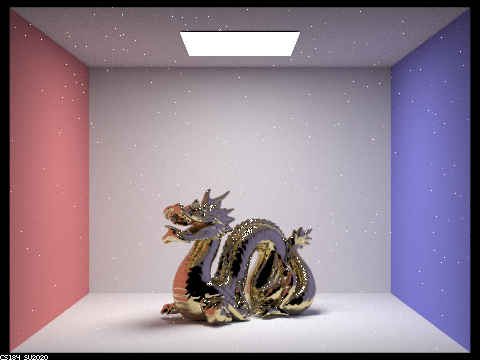
The sampling method also has a noticeable impact when rendering with the microfacet model. Cosine hemisphere sampling, a technique typically used for sampling diffuse BRDFs, produces high specularity when modeling a microfacet object with a smooth macro surface (low $\alpha$ value). This creates undesirable peppered spots scattered across the material. If we instead perform importance sampling according to the more suitable Beckmann distribution, we are able to curtail these speckles on the surface, producing a smoother, more natural-looking finish.
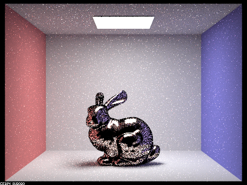
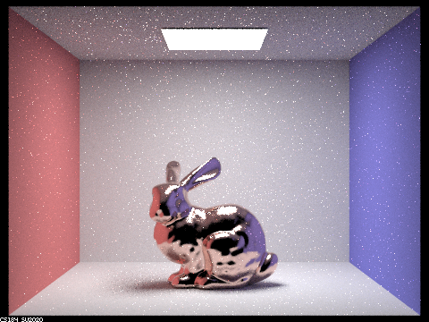
Tweaking other parameters like the refractive index and the extinction coefficient of the macro surface also has interesting visual effects on the constructed material. In the following image, we model a conductive material called Purple Plague, which is an aluminum and gold intermetallic. It has refractive indices of (1.3345, 1.8252, 2.1715) and extinction coefficients of (2.2091, 1.9416, 2.4688) for the red, green, and blue channels, respectively.
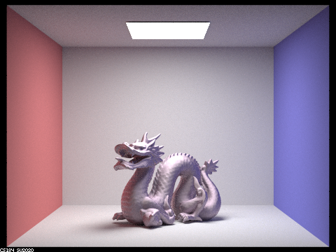